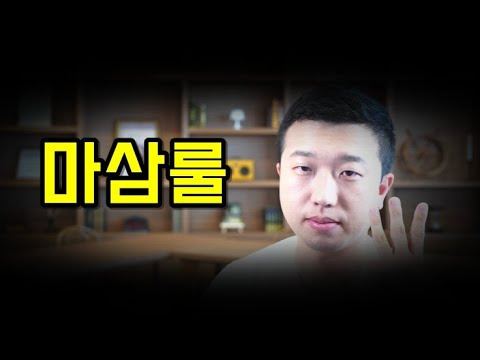
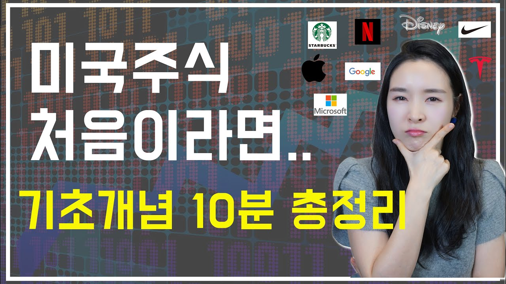
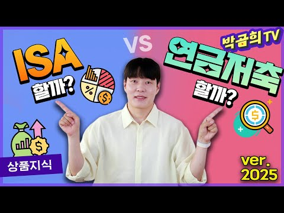
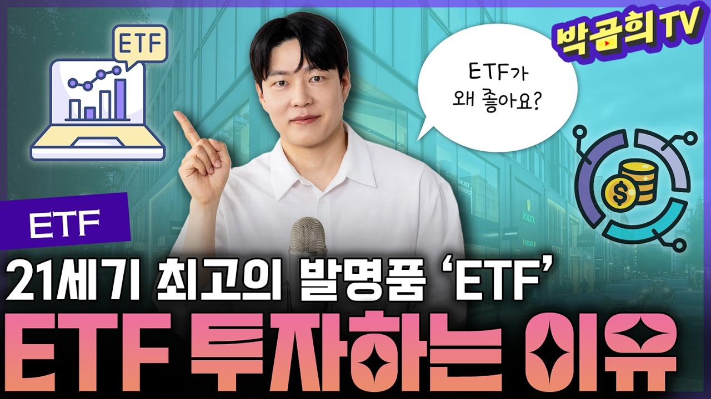
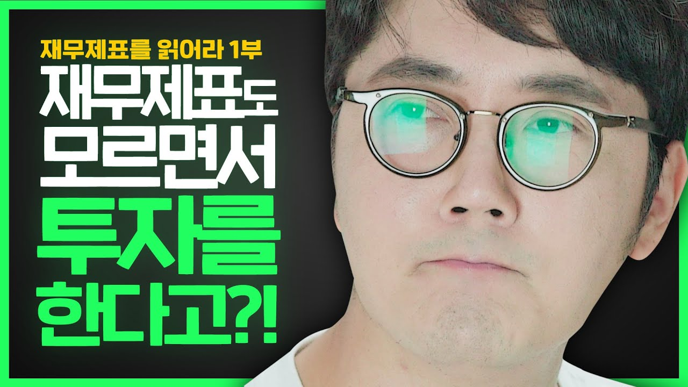
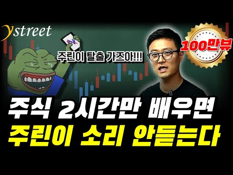
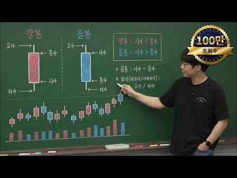
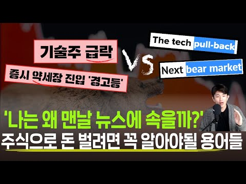

2020년 공개 후
445개의 후기가
지금도 쌓이고 있습니다
최근 수집한 후기 229개의 작성 연도 분포 · 공개 댓글 기준 · 2026.10.15 수집
“내가 시청한 다른 어떤 ETF 관련 방송보다 자세하고 구체적이며 글씨와 표로 상세한 설명까지 추가해 메모하며 공부하는데도 가장 도움되었습니다. 좋아요ㆍ구독버튼 꾸욱 눌렀습니다. 감사합니다.”
조스미-m7q · 6년 전 · 좋아요 51“ETF 영상중 단연 최고입니다! 내용이 정말 알차고 이해가 쏙쏙되는 설명 감사합니다 👏🏻👏🏻👏🏻”
KIKI_____ · 6년 전 · 좋아요 42“이해가 쏙쏙되네요~^^ 그냥 개별 종목 사듯 검색 하면 되네요 오늘 ETF대해 많이 알고 가요 혼자하면 고생했을텐데 넘넘 감사해요^^”
bombom1327 · 6년 전 · 좋아요 22ETF 이름 읽기부터 SPY·QQQ 매수까지
ETF 투자 방법을 처음부터 끝까지 한 번에 정리하는 수페TV의 입문 강의입니다. ETF가 무엇인지(주식+펀드)에서 시작해 'KODEX 200선물 인버스 2X TR' 같은 종목 이름을 다섯 조각으로 분해해 읽는 법, 네이버 금융에서 ETF 구성종목과 거래대금을 확인하는 법, 삼성자산운용·미래에셋자산운용 사이트 활용법, KODEX 200의 18년 수익률로 보는 장기투자의 근거, 글로벌 ETF 시장 현황과 SPY·QQQ 비교, 그리고 키움증권 영웅문S 글로벌에서 해외 ETF를 실제로 주문하는 화면까지 순서대로 다룹니다. 국내 ETF와 해외 ETF 중 어디서 시작할지 고민하는 왕초보를 위한 강의입니다.
강의가 강조하는 것
강사가 반복해서 강조하는 메시지는 세 가지입니다. 첫째, ETF 이름은 '운용사–추종지수–인버스–배수–TR'의 조합이라 분해하면 어디에 투자하는 상품인지 바로 보입니다. 둘째, 구성종목만 보지 말고 '비중'과 '거래대금'을 반드시 확인해야 합니다. SPY와 QQQ는 담고 있는 종목이 비슷해 보여도 애플·MS·아마존 합산 비중이 12.8% 대 32%로 달라 최근 10년 수익률이 261% 대 458%로 벌어졌습니다. 셋째, KODEX 200이 1개월·3개월·6개월·3년 구간에서는 마이너스여도 2002년부터 18년을 보면 2.2배(분배금 재투자 시 3.3배)가 됐으니 ETF는 노후자금을 위한 장기투자로 접근하라는 것입니다.
강의를 마치면
강의를 다 들으면 어떤 ETF든 이름만 보고 운용사·추종지수·레버리지·분배금 재투자 여부를 읽을 수 있고, 네이버 금융의 'ETF 분석' 탭에서 TOP10 비중과 거래대금을 직접 점검한 뒤, 해외주식 앱에서 QQQ 같은 글로벌 ETF를 국내 주식과 같은 방식으로 매수 주문까지 넣을 수 있게 됩니다.
“꼭 이 거래대금을 확인하고 투자하시기 바랍니다”
▶ 07:02 구간 · 수강 신청
“ETF 투자는 저는 장기 투자를 꼭 하시라고 권장을 드립니다”
▶ 10:02 구간 · 수강 신청
“글로벌 ETF라고 해봐야 미국 종목이라고 생각하시면 됩니다”
▶ 12:21 구간 · 수강 신청
이런 분께 추천합니다
- ETF를 사고 싶은데 KODEX 200선물 인버스 2X TR 같은 이름이 무슨 뜻인지 몰라 시작을 못 하고 있는 분
- 네이버 금융에서 ETF 구성종목과 거래대금을 어디서 보는지 모르는 분
- S&P500·나스닥100 ETF 중 무엇을 살지, SPY와 QQQ가 왜 수익률이 다른지 궁금한 분
- 해외계좌는 있지만 해외 ETF 주문 화면을 한 번도 열어보지 않은 분
이런 분께는 맞지 않아요
- 이미 SPY·QQQ 같은 해외 ETF를 직접 매매하며 보수·비중을 비교해 본 분
- ETF 세금·환전 같은 세부 실무를 기대하는 분(이 강의는 개념과 주문 화면 위주입니다)
강의가 끝나면
이걸 할 수 있게 됩니다
강의 내용을 그대로 정리했습니다. 강의에서 다루지 않는 내용은 적지 않습니다.ETF의 정의와 3가지 장점: 펀드처럼 분산·양방향 투자, 주식처럼 9시~3시 반 장중 실시간 거래, 펀드보다 낮은 수수료와 1주·2주 단위 소액투자
ETF 이름 5단계 분해법: KODEX(삼성)·TIGER(미래에셋)·KBSTAR(KB)·KINDEX(한국투자신탁) 브랜드, 200선물=코스피200 추종, 인버스=반대 수익, 2X=2배, TR=분배금 재투자
네이버 금융 ETF 메뉴 읽는 법: 국내 시장지수·업종/테마·파생·해외주식·원자재·채권·기타 탭과 KODEX 200 vs TIGER 200의 차이(운용사만 다름)
'ETF 분석' 탭에서 200개 구성종목과 TOP10 비중 확인하기, 하루 평균 거래대금이 왜 중요한지(1억 투자 시 하루 5천만원 거래면 매도 시 손해 가능)
운용사 지형: AUM 기준 삼성 52%·미래에셋 23%로 75%를 두 회사가 차지, ETF 개수는 미래에셋 29%·삼성 24%
KODEX 200 수익률 차트로 보는 장기투자 근거: 2008년 리먼 사태·2011년 그리스 사태 두 번의 출렁임, 2002년 이후 시장가격 220%·분배금 재투자 330%
글로벌 ETF 시장 현황: 미국이 AUM 70%, 일본 제외 아시아 4%, 글로벌 AUM 중 주식형 75.4%·채권형 18%
SPY(S&P500)와 QQQ(나스닥100) 비교: 배당수익률 1.68% vs 0.68%, 보수 0.09% vs 0.2%, 10년 수익률 261% vs 458%, 상위 3종목 비중 12.8% vs 32%
영웅문S 글로벌에서 해외 ETF 주문 넣는 순서: 해외주식 → ETF → 현재가 → 돋보기 종목검색 → 호가 선택 → 매수 → 수량·금액 입력 → 매수주문
글로벌 ETF TOP 2 비교: SPY vs QQQ (강의 시점 기준)
SPY (S&P500)
- 미국 대형주를 시가총액 비율로 투자
- 배당수익률 1.68%
- 보수 0.09%
- 주요 종목: 애플·MS·아마존·페이스북·버크셔·구글
- 애플+MS+아마존 비중 12.8%
- 최근 10년 수익률 261%
QQQ (나스닥100)
- 기술주 중심 나스닥100 지수 투자
- 배당수익률 0.68%
- 보수 0.2%
- 주요 종목: MS·애플·아마존·구글·페이스북·인텔
- 애플+MS+아마존 비중 32% (약 2.5배)
- 최근 10년 수익률 458%
영웅문S 글로벌에서 해외 ETF 매수하는 순서
- 1해외주식 앱과 해외계좌 준비키움증권 영웅문S 글로벌을 설치하고 해외계좌를 개설합니다(다른 증권사 앱도 탭 구성이 거의 같습니다).
- 2해외주식 → ETF → 현재가해외주식 메뉴에서 ETF를 누르고 현재가로 들어가면 국내 주식과 똑같은 호가창이 나옵니다.
- 3돋보기로 종목 검색오른쪽 돋보기를 눌러 QQQ처럼 사고 싶은 ETF를 검색해 선택합니다.
- 4호가 선택 → 매수매수하고 싶은 호가를 누르면 매수·매도·정정 탭이 뜨고, 매수 버튼을 누르면 주문 화면으로 넘어갑니다.
- 5수량·금액 입력 → 매수주문국내 주식 주문하듯 수량과 금액을 정하고 매수주문을 누르면 바로 체결됩니다.
강의 흐름 12개 구간
구간별 시작 시각 · 재생시간·조회수는 2026.10.15 기준01ETF란 무엇인가: 주식과 펀드의 장점만 합친 상품
ETF를 '주식과 펀드를 합쳐 놓은 것'으로 정의하고, 두 상품의 장점만 골라 가진 세 가지 특징을 설명합니다. 펀드처럼 분산투자와 양방향 투자가 되고, 주식처럼 9시부터 3시 반까지 장중에 실시간 거래되며, 펀드보다 수수료가 낮고 1주·2주 단위로 살 수 있어 소액투자가 가능하다는 내용입니다.
- 펀드의 장점: 분산투자, 양방향(인버스) 투자
- 주식의 장점: 장중 실시간 거래(9:00~15:30)
- 펀드보다 낮은 수수료, 1주 단위 매수로 소액투자 가능
02ETF 이름 분해하기: KODEX 200선물 인버스 2X TR
ETF가 어렵게 느껴지는 이유는 이름에 모르는 말이 섞여 있기 때문이라며, 'KODEX 200선물 인버스 2X TR'을 다섯 조각으로 나눠 읽습니다. KODEX는 삼성, TIGER는 미래에셋, KBSTAR는 KB, KINDEX는 한국투자신탁이라는 운용사 브랜드이고, 200선물은 코스피200을 추종한다는 뜻이며 S&P500·코스닥·나스닥이 오면 그 지수를 추종합니다. 인버스는 반대로 수익을 주고, 2X는 2배, TR은 분배금을 재투자하는 토털 리턴이라고 설명합니다.
- 브랜드별 ETF 비중: KODEX 53%, 미래에셋 24%, KB 8%, 한국투자 4%
- 인버스: 코스피200이 떨어질 때 반대로 수익
- 2X: 1% 수익이 날 때 2배로 수익
- TR(토털 리턴): 분배금을 세금 없이 재투자해 세금 측면에서도 유리
03네이버 금융에서 ETF 종목 찾기
네이버 금융 사이트에서 ETF 메뉴를 클릭하면 국내 시장지수, 국내 업종/테마, 국내 파생, 해외주식, 원자재, 채권, 기타 탭으로 ETF가 분류돼 있음을 보여줍니다. KODEX 200과 TIGER 200은 운용사만 다를 뿐 똑같이 코스피200을 추종하는 상품이고, 'KODEX 삼성그룹'은 이름만 봐도 삼성 계열사 위주로 투자하는 종목임을 알 수 있다고 설명합니다.
- 네이버 금융 → ETF 탭에서 유형별 ETF 목록 확인
- KODEX 200 = 삼성, TIGER 200 = 미래에셋, 추종지수는 동일
- 이름만으로 어디에 투자하는 ETF인지 1차 판단 가능
04'ETF 분석' 탭에서 구성종목과 TOP10 비중 확인
KODEX 200을 클릭하면 일반 주식 종목 화면과 같은 창이 뜨지만, 아래쪽에 'ETF 분석' 탭이 하나 더 있습니다. 이 탭을 누르면 왼쪽에 200개 구성종목, 오른쪽에 TOP10 비중이 나옵니다. KODEX 200, TOP10, 미국 나스닥, 골드, 원유, 콩 등 각 ETF마다 구성종목이 다르니 반드시 살펴보고 투자하라고 당부합니다.
- 주식 화면과 다른 점은 'ETF 분석' 탭 하나
- 구성종목 전체와 TOP10 비중을 한 화면에서 확인
- ETF마다 담는 자산이 다르므로 매수 전 구성종목 점검은 필수
05거래대금을 꼭 확인해야 하는 이유
ETF 분석 화면 아래의 거래량과 평균 거래대금을 설명하며, 거래대금이 정말 중요하다고 강조합니다. 내가 1억을 투자해야 하는데 하루 거래대금이 5천만원 정도밖에 안 되면 나중에 팔려고 할 때 잘 팔리지 않거나 손해를 보고 팔아야 하는 경우가 생기기 때문입니다.
- 투자금 대비 하루 거래대금이 작으면 매도 시 체결이 어렵다
- 예시: 1억 투자 vs 하루 거래대금 5천만원
- 거래대금 확인 후 투자
06더 자세히 보려면 운용사 사이트로
네이버 금융에서 간단히 본 내용을 더 깊게 보고 싶다면 삼성자산운용(KODEX)과 미래에셋자산운용(TIGER) 사이트에 들어가 직접 실적과 포지션 구성을 확인하라고 권합니다. 이어서 운용사별 AUM 비중과 ETF 개수를 비교하는데, AUM은 삼성 52%·미래에셋 23%로 두 회사가 75%를 차지하고, ETF 개수는 미래에셋 29%·삼성 24%로 두 회사가 절반 이상을 갖고 있습니다.
- 운용사 사이트에서 종목 검색 → 실적과 포지션 상세 확인
- AUM 기준 삼성 52%, 미래에셋 23%
- ETF 개수 기준 미래에셋 29%, 삼성 24%
- 대부분의 투자자는 결국 삼성·미래에셋 ETF를 쓰게 된다
07왜 ETF에 투자해야 하는가: KODEX 200 18년 수익률
KODEX 200 수익률 차트가 우상향하는 가운데 2008년 1월 리먼 사태, 2011년 그리스 사태(글로벌 금융위기) 두 번의 출렁임이 있었고 지금 세 번째 출렁임이 오려 한다고 설명합니다. 그럼에도 2002년부터 현재까지 시장가격으로 2.2배(220%), 분배금을 재투자했을 때는 3.3배(330%)의 수익률이 났습니다. 차트의 빨간색이 분배금 재투자, 회색이 시장가격 기준입니다.
- 18년 동안 두 번의 큰 하락을 거치고도 220%~330% 수익
- 분배금 재투자 여부가 2.2배와 3.3배의 차이를 만든다
- 1개월·3개월·6개월·3년 구간은 현재 마이너스 수익률
08단기 마이너스에도 장기투자를 권하는 이유
최근 1개월부터 3년까지는 마이너스라 투자하면 안 되나 싶을 수 있지만, 강사는 ETF는 꼭 장기투자하라고 권장합니다. 5년·10년·20년이 지나면 지금 30대·40대도 가져갈 수 있는 종목이고, 복리로 수익률을 극대화할 수 있는 상품이므로 노후자금을 위한 장기투자 목적으로 접근하라는 메시지입니다.
- 장이 좋을 때도 ETF는 함께 수익을 내지만, 장기로 갈수록 효과가 커진다
- 복리로 수익률을 극대화할 수 있는 종목
- 노후자금 목적의 장기투자 권장
09글로벌 ETF 시장 현황: 미국 70%, 주식형 75.4%
KODEX 200은 한국에서 운용하는 ETF였다면 글로벌 시장은 어떤지 표로 보여줍니다. AUM(운용자산 규모) 기준 미국이 전체의 70%를 차지하고, 한국이 포함된 일본 제외 아시아는 4%에 불과해 한국 ETF는 아직 크게 성장하지 못하고 늘어나는 추세라고 설명합니다. 자산 유형별로는 글로벌 AUM의 75.4%가 주식형, 18%가 채권형입니다.
- AUM = 운용자산의 규모
- 미국 70% vs 일본 제외 아시아 4%
- 주식형 75.4%, 채권형 18%
- 한국 ETF 시장은 아직 성장 초기, 미국에 직접 투자하는 길도 있다
10글로벌 ETF TOP 2: SPY와 QQQ
미국 비중이 70%이니 글로벌 ETF는 곧 미국 종목이라고 보면 된다며 두 종목을 소개합니다. SPY는 S&P500을 추종하며 미국 대형주를 시가총액 비율로 담고, 배당수익률 1.68%, 보수 0.09%입니다. 주요 구성종목은 애플·MS·아마존·페이스북·버크셔·구글입니다. QQQ는 나스닥100을 추종하는 기술주 중심 ETF로 배당수익률 0.68%, 보수 0.2%이고 MS·애플·아마존·구글·페이스북·인텔을 담고 있습니다.
- SPY: S&P500, 시가총액 가중, 배당 1.68%, 보수 0.09%
- QQQ: 나스닥100, 기술주 중심, 배당 0.68%, 보수 0.2%
- 배당수익률 1.68%는 상당히 큰 포지션이라는 평가
11구성종목은 비슷한데 수익률이 다른 이유: 비중
SPY와 QQQ는 담고 있는 종목이 비슷해 보이지만 최근 10년 수익률은 SPY 261%, QQQ 458%로 크게 다릅니다. 그 이유는 비중에 있는데, 애플·MS·아마존을 합치면 SPY는 12.8%인 반면 QQQ는 32%로 약 2.5배 차이가 납니다. 이 세 종목이 작년에 많이 올랐기 때문에 QQQ가 더 큰 수익률로 보답했다며, 지수 ETF를 볼 때는 어떤 종목이 있는지뿐 아니라 각 종목이 얼마만큼 비중을 차지하는지 꼭 확인하라고 강조합니다.
- 10년 수익률: SPY 261% vs QQQ 458%
- 애플+MS+아마존 비중: SPY 12.8% vs QQQ 32%
- 종목 목록보다 '비중'이 수익률을 가른다
12글로벌 ETF 직접 매매하기: 영웅문S 글로벌 화면
이전 영상에서 키움증권 영웅문S 글로벌 설치와 해외계좌 개설법을 다뤘다며, 계좌가 있다면 다른 증권사 앱도 탭이 거의 비슷하니 따라 하면 된다고 안내합니다. 해외주식 메뉴에서 ETF를 누르고 현재가로 들어가면 주식 거래 때 보는 것과 똑같은 호가창이 나오고, 오른쪽 돋보기로 QQQ를 검색해 원하는 호가를 누르면 매수·매도·정정 탭이 뜹니다. 매수를 누르면 주문 화면으로 넘어가 국내 주식처럼 수량과 금액을 정하고 매수주문을 누르면 체결됩니다.
- 준비물: 해외주식 앱(영웅문S 글로벌)과 해외계좌
- 해외주식 → ETF → 현재가 → 호가창
- 돋보기로 종목 검색(QQQ) → 호가 선택 → 매수/매도/정정
- 국내 주식 주문과 거의 같아 어렵지 않다
이 강의에 나오는 용어 12개
- ETF
- 주식과 펀드를 합쳐 놓은 상품으로, 펀드처럼 분산·양방향 투자가 되면서 주식처럼 장중에 실시간으로 거래되고 수수료가 펀드보다 낮습니다.
- KODEX / TIGER / KBSTAR / KINDEX
- ETF 이름 맨 앞에 붙는 운용사 브랜드로 각각 삼성, 미래에셋, KB, 한국투자신탁을 뜻합니다.
- 200선물
- 코스피200 종목을 추종하는 지수를 따라간다는 뜻으로, 이 자리에 S&P500·코스닥·나스닥이 오면 그 지수를 추종합니다.
- 인버스
- '반대'라는 뜻으로, 추종 지수가 떨어질 때 반대로 수익을 주는 상품입니다.
- 2X
- 곱하기 2, 즉 지수가 1% 움직일 때 2배로 수익(손실)을 주는 레버리지 표시입니다.
- TR(토털 리턴)
- 분배금을 받지 않고 재투자하는 방식으로, 분배금에 붙는 세금을 내지 않고 다시 투자하므로 세금 면에서 유리합니다.
- 분배금
- ETF가 투자자에게 나눠주는 수익으로, 재투자 여부에 따라 KODEX 200의 18년 수익률이 2.2배와 3.3배로 달라졌습니다.
- 거래대금
- 하루에 거래되는 금액으로, 투자금에 비해 너무 작으면 나중에 팔 때 안 팔리거나 손해를 보고 팔아야 할 수 있습니다.
- AUM
- 운용자산의 규모를 나타내는 지표로, 글로벌 ETF AUM의 70%를 미국이 차지합니다.
- SPY
- S&P500을 추종해 미국 대형주를 시가총액 비율로 담는 ETF로, 배당수익률 1.68%, 보수 0.09%입니다.
- QQQ
- 나스닥100을 추종하는 기술주 중심 ETF로, 배당수익률 0.68%, 보수 0.2%이며 애플·MS·아마존 합산 비중이 32%입니다.
- 호가창
- 매수·매도 가격이 나열된 화면으로, 해외주식 앱에서도 국내 주식과 똑같은 모양으로 나오며 원하는 호가를 눌러 주문합니다.
수페TV
445명이 남긴
진짜 반응
이 강의를 들은 분들이 남긴 공개 댓글입니다. 원문 그대로이며, 웨일베이스가 쓴 후기는 없습니다.내가 시청한 다른 어떤 ETF 관련 방송보다 자세하고 구체적이며 글씨와 표로 상세한 설명까지 추가해 메모하며 공부하는데도 가장 도움되었습니다. 좋아요ㆍ구독버튼 꾸욱 눌렀습니다. 감사합니다.
ETF 영상중 단연 최고입니다! 내용이 정말 알차고 이해가 쏙쏙되는 설명 감사합니다 👏🏻👏🏻👏🏻
이해가 쏙쏙되네요~^^ 그냥 개별 종목 사듯 검색 하면 되네요 오늘 ETF대해 많이 알고 가요 혼자하면 고생했을텐데 넘넘 감사해요^^
이해력이 안 좋은 편인데 이 영상 보고 한 70% 이해함
오늘도 잘듣고갑니다 수페님 주말마무리잘하세요~^^감사해요^^
감사합니다.저도 구독 좋아요 눌렀어요. 정리의 달인이신듯~:)
차분 차분 공부해서 우등생 되고 싶어요. 감사의 인사로 '구독' 🎁 Happy new year~~!!!
너무알기쉽게설명해주셨네요. 정말감사합니다
내가 시청한 다른 어떤 ETF 관련 방송보다 자세하고 구체적이며 글씨와 표로 상세한 설명까지 추가해 메모하며 공부하는데도 가장 도움되었습니다. 좋아요ㆍ구독버튼 꾸욱 눌렀습니다. 감사합니다.
잘봤어요!!!
왕초보도 알아먹겠네요 대단해요!
눈에쏙쏙들어오고 쉽게 설명해주셔서 감사합니다. 화이팅!
SPY 보수 0.09
이렇게 차분하게 알아듣게 마지막에 종목까지 설명을 잘 해주셔서 잘 들었습니다.수고하셨습니다.
감사합니다!!
[정주행 4일차] 역시 1타 강사 수페님. ETF 이해가 쏙쏙 되네요
시작하는 시점에서. 잘보고갑니다. 좋아꽝 구독꽝
너무좋네요 저는 왕초보거든요~
요사이 국내.외 ETF에 관심을 갖고 찾고 있었는데 저에게 많은 도움이 되었습니다 감사합니다.
영상너무감사합니다
깔끔한 정리 감사합니다. 투자하는데 많은 도움이 되고 있어요.^^
구독 잘보고갑니다
재테크 주식 채권 등등 무식할 정도로 아무것도 관심없던 사람으로 요즘에서야 재테크에 눈을 뜨게 됐네요~~ 공부를 끓임없이 해야한다는 생각이 드는데 넘 도움됩니다 감사합니다^^
그동안 부동산 투자만 하다 이제 주식투자 ETF에 대해 배우기 시작했는데 초보자에게 정말 유용한 것 같아요
9:25 에 보면 분배금 재투자하면 3.3배 수익율이 나온다고되어있는데 그건 어떻게한다는 말씀이신가요...?
적으면서 공부하고 있어요. 은혜로운 강의였습니다. 구독했어요👍
17:00
구독,좋아요 했어요. 경제관념 없는데 하나씩 알아가고싶네요. 많은 가르침 부탁드립니다
해외 ETF도 반복투자 TR 이 가능한가요? 가능하다면 설명 요청 드립니다.
설명 짱짱 이해하기 쉽게 해주셔서 잘 배우고 갑니다. 구독 좋아요 꾹~
수페님 덕택에 ETF에 입문한 주린이입니다. 좋은 영상 항상 감사드립니다. 질문이 있어서 댓글 답니다. DGRW가 자꾸 눈에 아른거립니다. QYLD는 배당에만 눈이 멀어 관심은 가는데 참고 있는중이구요. SCHD, JEPI랑 QYLD, DGRW 비교가능할까요?
알려주신 방법대로 키움에서 QQQ 한주만 매수 해봤습니다. 그런데 제가 매수한게 제대로 된건지, 수익률은 어떻게 보는지 이런걸 모르겠네요. 초심자들을 위해서 수익률, 현재 자산, 매수한 종목 확인하기, 이런거 알려주는 강의영상 하나 만들어 주시면 많은 주린이들에게 도움이 될거 같아요~
좋은 정보 감사합니다. 초보한테 많은 도움이 되었습니다. 좋아요~ 구독~^^
16:46
8:48
VOO는 어떻게 생각하시는지요 ?? 지금 voo와 vig 섞어서 투자하는것은 현명한 판단처럼 보이는지 궁금하여 여쭙니다 ㅎㅎ
너무너무 감사합니다. 너무너무 도움이 많이 되었어요. 구독 꾹
안녕하세요 영상 잘 보고있습니다 qqq장기투자 생각하고있는데요 국내 ETF경우 분배금이 재투자되는경우와 아닌경우의 수익률이 많이 차이가 나는데요 해외 ETF의경우는 어떤가요??? 해외 etf는 분배금이라는 개념보다는 그냥 분기나 년마다 배당금이 지급되고 그게 다시 재투자 되지않는건가요?
초보 개미에겐 정말도움되는 영상 입니다 감사합니다
감사합니ㅏ.
머리 아픈 주식시장 좋은 공부하고 갑니다. 끝날때까지 끝난게 아니니까. 화이팅 입니다.. 좋은 영상 감사합니다.😁
쉽게 설명해주셔서 감사합니다~~^^
책만보다가 100프로 이해가 안되서 찾아보게되었는데 ㅋ 우왕^^ 쉬운 설명 감사해요~~~
오늘 첨 수페 영상 접했는데 고퀄리티 감각이 느껴져 구독버튼 누릅니다
자세하고도 쉽게 설명해주시니 이해가 됩니다.좋은영상 감사합니다.좋아요,구독 누르고 갑니다.
ETF 영상중 단연 최고입니다! 내용이 정말 알차고 이해가 쏙쏙되는 설명 감사합니다 👏🏻👏🏻👏🏻
조아요!
감사합니다 ~! 공부 잘하고 갑니다 계속 좋은 공부 부탁드립니다
국내주식투자도 안해본 완전쌩초보인데 진짜 설명이 킹왕짱이네요 한번에 다 이해됐어요
이제 막 시작하려는 저같은 초보에게 정말 좋은 정보였어요 👍👍
좋아요
구독했습니다. 앞으로도 좋은 영상 부탁드리겠습니다
도움이 많이 된 영상입니다. 구독. 좋아요. 누르고 다른 영상도 보겠습니다. 감사합니다.
너무 진솔하게 소개해서 감사합니다
궁금했던 점 상세히 쉽게 설명해 주셔서 많은 도움이 되었습니다. 감사합니다. 구독, 좋아요 눌렀습니다.
오늘 구독했어요! 방송 잘 봤습니다.^^
정말 좋은학습시간이었습니다. 감사합니다.
자세한 설명 감사합니다:)
최고에요 영상감사합니다👍👍👍👍👍
초보자를 위한 방송 감사합니다*~~
너무 잘 들었습니다. 고맙습니다
ETF 배우고 싶었는데 감사합니다
최고의 공부에요. 감사합니다.
국내 해외 ETF 총정리 도움되었습니다. 감사합니다
기업 정보도 자세하고 투자방법도 넘쏙쏙ᆢ감사드립니다
바로 구독 눌렀어요 짱
잘들었습니다~ 그런데 이 영상도 어느정도 알아야 이해가 되겠네요..
굿~~
이해가 쏙쏙되네요~^^ 그냥 개별 종목 사듯 검색 하면 되네요 오늘 ETF대해 많이 알고 가요 혼자하면 고생했을텐데 넘넘 감사해요^^
설명 참좋습니다 자주강의부탁드립니다
감사합니다~♡♡
미국주린이에요. 처음 들었는데 완전 이해 팍 되서 오늘 밤 바로 매수하러 갑니다. 구독 눌렀어요.^^ 다른거 정주행갑니다.
시작전에 구독 좋아요 눌렀어요
구독과 좋아요~ 했습니다~
초보자인데 귀에쏙쏙들어옴
Etf 공부하러왔어요...계속올께요...좋아요..구독..알림 꾹..했어요....
안녕하세요, 수페님, 항상 알기쉽게 영상 올려주셔서 감사합니다~!! 질문이 한가지 있는데요, ISA에서는 해외상장ETF가 아닌 해외지수를 따라가는 국내 ETF만 있는 것 같드라구요. 혹시 이런 ISA,IRP계등과 같이 세제혜택을 받을 수 있는 etf와 해외상장 etf를 적절히 투자하는데 팁이 있을까요?ㅎㅎ 감사합니다~!
감사합니다.
ETF 궁굼했는데 자세한 설명 감사합니다.
ETF 어렵게만 생각했는데 쉽게 설명해주셔서 감사합니다!
상세하면서도 흥미를 가질 수 있도록 설명을 잘해주셔서 좋아요. 앞으로도 많은 영상 부탁드려요. 감사합니다.
감사합니다
너무 좋은 영싱 감사 드립니다 꼭 필요한 정보 굿 따로 저정합니다
초보자 인데 많은 도움 되었습니다. 차분한 목소리와 상세한 설명 감사드립니다. 구독중과 좋아요 누르고 갑니다. 감사합니다.
아...이제 이해가 잘됐습니다! 감사합니다 주린이에게 커다란 도움이 됩니다 수페님 더욱 부자되세요!:)
해외etf설명 고마워요
재밋네요
좋은 영상 감사합니다!
알기 쉽게 그림까지 첨부하여 잘 설명해주셔서 감사합니다. 다만 볼륨이 좀 작네요..
감사합니다. 좋은 선생님이세요. 노후가 많이 불안한데, 주식에대한 부정적인 생각때문에, 투자랑은 거리가 먼 사람입니다. 조금씩 투자하길 원해서 공부하고 있습니다. 매매하는 법 알려주셔서 감사합니다.
좋은 영상 감사합니다
학창시절 공책 정리의 달인 이셨을듯b
잘봤습니다
폰으로만 할건데 하는 순서를 배울수 있을까요
예를 들어 배당수익율은 etf를 100달러 10개를 가지고 있으면 그리고 배당수익율이 2프로면 100*10*(2/100)으로 계산이 되어 지는 건가요? 그러면 20 달러 가 배당수익율 인건가요?
그럼 etf회전율은 어떤걸 보고 아나요~?? 거래량보고 아는건가요~? 보통 거래량이 얼마정도 되면 회전율이 높은건가요~?
궁금합니다 수페님... 수페님의 자세한 etf강의를 우연찮게 듣고 etf에 투자하고싶은 생각이 들어 10년동안 매달 부었던 연금저축보험에서 연금저축펀드로 옮기긴했는데 막상 목돈이 들어오니 etf잘못하면 10년쯤후 연금 받을때 세금폭탄을 맞는다고들 하는데 무슨말인지 잘 이해가 안갑니다 참고영상이 있는지여? 그리고 연금저축은 어떤 etf에 투자해야하는지 궁금합니다... 답 부탁드립니다 감사합니다
ETF = 안전 보수적 그냥 하나에 몰빵 = 대박 아니면 개망
주식왕왕초보입니다 요즘마음도쪈도 허하다보니 이런영상에 관심을 갖게되네요 기초적인설명. 너무감사합니다 투자한번해보고싶네요
구독 눌렀네요~설명 잘들었습니다!! 키움증권등 여러 증권회사들이 있는데 펀드는 회전율이 중요하다고 들었어요~그럼 ETF는 회전율과 상관이 없는건가요??아무 증권사로 가입하면 되나해서요~
tr상품은 분배금을 어디에 투자해준다는 말인가요?
Tqqq 같은 레버리지는 왜 장기간 투자가 위험한지요?
.
Spy 보수 0.9가 아니라 0.09로 수정하셔야해요 영상 잘 보고 있습니다
오른쪽위화면에 개좌계설 나온다고하셧는데 아무것도 안떠요
타이거 2차전지로 가야겠다 연금저축보험 연금저축펀드로 전환하고 이거로는 2차전지 가야겠습니다 설명 고마워용
마지막에 해외etf를 보니까 환율을 적용해서 그에 맞는 값으로 구매를 하던데 이러면 환율시세에 대한 개념이랑 방향성 공부는 필수불가결로 같이 해야하는거겠죠..?
표와 글자를 보면서 설명들으니 도움이 됩니다 구독과 좋아요 꾹 꾹 ㅎㅎ 했습니다 ~ETF하고 싶으나 너무 몰랐는데 감사합니다 ^^지금 상황은 해외 ETF가 수익율이 더 좋은 건지 궁금합니다
이렇게 좋은 영상을 오늘에서야 보게됐네요.저는 QQQ,SPY 들어갈까 하는데 이미 주가가 하늘을 찌를듯 솟구쳐있는 상태인데 주가가 떨어졌을때 들어가는게 더 좋겠죠? 물론 장투할 생각입니다.
매일 소수점 매수 월급날 일정액 매수 어떤게 나을까요? 둘다 소수점매수는 동일합니다..
잘보았읍니다. 추천하신 ETF에 1억정도 투자하려합니다 그런대 내나이 70이넘은 나이고 내가 직접사고파는것못하니까 증권회사 brocker가 해조야 하는대. 이모든것이 괞찮을까요?
이번 처럼 단기 급락 때는 어찌 대처해야 하는지
수페형님 저는 일본에 사는 직장인인데요.. 연금저축ETF하고싶은데 계좌는 가지고있습니다만, 해외거주자도 대상이 될까요.. 살수는 있는데 뭔가 문제가되지않을까 걱정이네요..
이런 etf 주식 매수하려면 따로 교육을 받아야 하나요? 아님 레버리지일 경우만 받나요?
해외주식을 거래하는 앱 선택 전략도 있을까요? 아니면 다들 대동소이한가요? 수수료를 많이 떼는 어플이 있다거나 그런지 궁금해요. 그리고 가능하다면 국내 ETF보다 해외 ETF 직접 거래의 장점은 뭔가요?
2:41 KODEX(삼섬)이라 되있는대 오타이신가요?
수페님 오늘도 깔끔하게 잘 정리해주신 영상 감사히 잘 보았습니다. 친구들한테 ETF를 어떻게 쉽게 설명해야 할지 고민중이었는데 슈페님 영상을 추천드리면 되겠네요! * 영상중에 SPY ETF의 보수는 영상에 0.9%로 표시 해주셨는데 오타인듯 합니다. 실제 보수는 0.09% 입니다. 참고 하시면 좋을듯 합니다. 수수료는 SPY가 QQQ보다 낮지만 수익률은 QQQ가 워낙 좋아 둘다 투자 하면 좋을듯 합니다.
설명 쉽게 하시네요 저는 키움증권 가입했는데 키움증권은 ETF 없다고 이제 알았습니다
마지막 MTS 구매 이용방법에 계좌번호 그대로 노출되세요. 혹시몰라서 말씀드립니다.
마이크 소리가 너무 울려요
구독합니다 50대입니다 지금 시작해도 될까요? 주식은 아무것도 모릅니다 50대가 되니 너무 불안합니다 너무 늦은 나이가 아닌지 이제라도 해보고 싶네요
주식하기엔 너무 까막눈이라 찾던와중에 저도 소 베 액 팅 추천받아서 쳐봤는데 너무좋네요 ^^
그냥 아무곳이나 쳐도 소 배 액 팅 주소 알수있어요 ㅎㅎ 워낙에 믿을만한곳이라
소 배 액팅 그냥 아무대나 쳐봐도 나와요? 어디서 찾아들어가는거지
주변에서 다들 소 베 액팅 말하던데 아무것도몰라도 할수있나요?? ㅠ
아아 그거 저도 알아요 소 배 액 팅 ㅎㅎ 어려운것도 없고 간단한 지식만으로 할수있다던데
미국 SCHD ETF 직투와 sol 미국배당 다우존스를 ETF를 매수시 10년이상 장기투자시 어느 ETF를 장기투자를 하는게 나을까요?? 고견을 듣고 싶습니다.
여기서 수익률에는 물가상승분이 반영된 건가요?
주린이 입니다. 이제 주식을 첫 시작합니다. 40대초반이고, 안정적인 직장을 다니고 있어서 장기투자가 가능할거 같습니다. 장기투자면 연금저축으로 하라고 하던데.. 연금저축 etf투자를 말씀하시는건가요? 아님 그냥 연금저축을 가입하라는건가요?
영상 잘 봤숩니다. 분할매수라는건 수시로 조금씩 사는걸 말하나요? 적금빠지듯 자동으로 매수되는검 아니죠? ㅎㅎ;; 주린이에요;;;
인버스가 뭔지도 모르고 둘러보던중 인버스2× 바닥에 있다 싶어 선 매수 후 확인 ! ^^ 선물이 떨어지면 수익이 나는구조군요! 그럼 잘 샀다는거네요!
소베액 팅 많이 유명하죠 그냥 쳐보기만해도 바로나오니까 ㅎㅎ
분배금재투자하는방법은 어떻게해야하나요?
Qqq나 spy같은 해외 etf도 일반 기업주식처럼 무기한으로 내가 팔때까지 가지고있는게 아니라 달마다 롤오버비용이 작용하나요?
다른 ETF 소개영상에서는 하루이상 투자할 경우 변동성이 큰 경우 오히려 손해를 볼 수있다고 주의하라고 하던데 장기간 보유 할 경우 이 변동성을 고려하는게 맞는거죠?
증권사계좌는 어떤거 쓰시나요?
ETF에 관심이 생겨서요 저는 외화계좌가 있는데요 키움증권계좌개설시에 저의 외화계좌가 연동이 가능할까요? 아님 굳이 외화계좌와 연동할 필요없이 달러로 이체만해도 되는건가요?
컴맹이라 슈퍼티비 여러번 듣고 etf 골라서 매수중인데 왜 매수하고나니 다른 유트브도 보게된네요 다르방송에서 완전한 상품이 아리라고 하니?그런데 자꾸만 불안해요😅😅
아 소 배 액팅 들어봤어요 초보자들도 쉽게 접목할수 있다던데
Voo S&p500etf 이게 인덱스펀드 맞져?
국내 증권사 삼성 미래에셋 한투 등에서 판매하는ETF 미국S&P500, 미국나스닥100 상품들과 해외주식에서 판매하는ETF SPY(S&P500) , QQQ(나스닥100) 은 다른상품인가요?
코덱스 레버리지 ETF와 관련하여 질문 있는데요.듣기로는 ETF를 장기로 투자하는게 좋지 않다고 하는데요. 제생각에는 코스피 200지수를 따르는거니까 예를 들어서 10000원에 매수해서 장기적으로 12000될때 매더하면 수익난다 생각하는데 매일매일 수익률로 계산해서 변동성이 클경우 손실이 발생할 수 있는건가요? 꼭 답변 부탁드립니다.
장기투자시 국내상장 해외ETF와 해외상장ETF 투자 중 어느게 나을까요? 아주 고민되네요
국내 ETF(연금저축펀드목적) 한두개 가입하고 싶은데 삼성전자꺼 가입하고 싶은데 KODEX 200 가입하면 되나요?
Etf 5년투자하는건 어떻게 생각하시나요? 5년 뒤에 집 살 예정이라..
주린인데 증권사 추천좀 해주세요ㅠㅠ
예를 들어, 한국 증권 거래소에 상장되어있는 미국 주소 추종 ETF (예를 들어 S & P 500) 상품이 오늘 1% 올라서 종가로 100 원으로 한국 시장에서 끝났습니다. 그런데, 그날 새벽에 미국 증권 시장에서 S & P 500 가 10%가 올랐어요. 그럼 한국에서 산 제 미국 추종 ETF 가 다음 날 바로 10% 오른 상태로 시작하는 건가요? 아니면 10% 오르려면 제가 산 한국에 상장된 미국 추종 ETF 를 다른 사람이 많이 사야 10%가 오르는 건가요? 만약 미국에서는 10% 올랐지만 다음 아침 한국에서 아무도 제 ETF를 사지 않는다면, 10%로 오르지 않고 정체 되거나 하락하는 건가요? 너무 궁금합니다. ETF고수 분들 답변 부탁 드립니다.
Etf 배당금도 주나요? 해외주식기준 몇프로 주나요?
수페님 영상 항상 고마운 마음으로 보고 있습니다. 제가 ETF 미국테크TOP 10 투자중인데요. ETF가 지수를 추종한다고 했는데 예를들어 TOP10종목이 개별 평균 5 프로 상승하면 제가 ETF를 팔때 주식도 저절로 5프로 상승되어 있는건가요? 아님 매수 매도에 따라 움직이는 건가요?
ETF시작해볼려고 계좌개설했는데 국내상장미국ETF는 거래되고 해외상장ETF는 거래가 안되던데 답변쫌 부탁드립니다. 참고로 삼성증권IRP계좌입니다.
귀에속들어와요
주식 잘 모르는 초보는 직접투자보다 etf로 하는게 나을까요?
인터넷 할지모르는데요 증권회사가서 하면돼나요?
영상 잘봤습니다. 감사합니다!! 질문드리고 싶은게 호가창에서 선택하는건 어떤의미인가요??
수페님.궁금한게있습니다. 수페님 영상보고.qqqm.고민중인데 Kb나스닥100 .타이거s&p 하고 있으면 중복인가요? 금리가 오르면 채권주(tlt).배당주(sphd) 중 어떤게 안전 할까요?
증권사 HTS에서도 매수, 매도하는가요? HTS 어디를 봐도 매수,매도하는 곳이 안보여서요.
증권회사 가면 왜 상담안해주지요? 펀드 나 etf 투자하겠다 하니까요 어플깔아서 하겠다 수수료절감되니까요 상담안해주네요 수수료 많이내는 창구어플 로 해야 상담해주나요?
미국 ETF 에 투자하고 싶은데 보유자산이 달러밖에 없는데, 가능한가요? 요새 우리나라 불안한데 증권사에 맡겨도 괜찮나요?
연보수가 낮은게 좋다고 들었는데 연보수가 뭔가요!?
QQQ상품이 여러개있는데 헷갈려서 못했어요ㅠ
spy 보수 0.09% 아닌가요?
완전 주식 초보인데요. 저렇게 매수를 한번 하고 그냥 둬둬 되나요? 또 원할 때마다 더 매수할 수 있나요? 또 자동이체 같은 것도 되나요?
가입하려고 하는데 어떻게 하는지 모르겠네요
etf? 뭐가뭔지 모르겠네요..ㅠ 직접투자만 10여년인데 주식거래랑 뭐가 다른건지요.? 주식+펀드? 난 주식따로 펀드따로만 해봐서~~ㅠ나이가 있어서 이해력부족인가요?ㅠㅠ
마이크바꾸셧나 소리가 이상하네요
미국 etf 주식을 사모을려고 합니다. 그런데 미국 주식 매수간에 맞추어 매수하게 되면 환전 안해도 되는 것인지요. 부탁드립니다.
ETF랑 주식의 가장큰 차이가뭔가요?그리고 둘중 하나 투자할거라면 어떤걸추천하시나요?
영상 잘보고있습니다. 사회초년생 주린이인데 나스닥을 추종하는 QQQ와 S&P500지수를 추종하는 SPY 두가지 ETF를 매달 1주씩 사는건 어떨까요? 분산투자가 기본이라고 하셨는데 이렇게하면 분산투자와는 거리가 멀어질까요?
수익 발생시 분배금은 어떠한 기준으로 주는건가요? 수익률만큼 투자자가 직접 주식팔아서 이득 챙기는건가요?
수페님, 연금계좌로 ETF릉 할 경우, 나중에 연금 수령을 예를 들어 55세부터 한다고 가정하면 연금을 10년이상에 걸쳐서 수령하게 되나요? 만약 맞다면 그 기간동안 그동안 모인 돈은 계속해서 일을 하는건가요? 많은 분들이 일반계좌보다 연금계좌로 ETF 하기를 추천하던데 이부분을 아직 잘 모르겠네요^^; 부탁 드립니다.
증권사를 찾아가면 개설을 도와주고 하나요
설명을 진짜 구조적으로 잘하시네요 다 좋은데 발전을 위해 좀더 건의드리자면 1. 그림에서 설명하는 부분이 있던데 그 게 너무 작아서 컴에서도 잘 안보이는데 중요부분을 확대해서 설명해주시면 더 좋을듯 2. 영문 약자가 나오는데 약자의 원래 영문도 참고로 써주신다면 더 좋을듯 3. 그리고 수익률을 설명하시는데 기간이 명확치 않아서요 월수익률인지 연수익률인지 그 기간도 명확히 해주시면 더 좋을듯 위 세 개만 보완하신다면 제가 발견한 최고의 설명 유투브인듯 그 외의 보완 하실 점은 전혀 없을 정도로 거의 완벽한 곳이 여기임
질문 하나 드립니다 tiger 미국 s&p500 과 tiger 미국테크top10은 중복인가요? 주린이 올림
프리미엄 가입하려고 결제햇는데 왜 결제취소가 뜨는거죠?
안녕하세요~ 머리털나고 주식 처음 해보려합니다. 영상 마지막부분 현재가-호가창에 보면 노락색 박스해 놓은 곳이 파란색이고 그 밑에는 붉은색인데 무슨차이가 있는건가요? 그리고 붉은색 가격이 더 싸던데 제일 싼 가격 눌러서 매수 할수도 있는건가요? 그리고 키움에보니 원화매수도 생겼던데 그럼 환전 안해도 되는 건가요?
소 배 액팅은 워낙 유명해서 앞전부터 핫했는데 이게 지금 뜨네요 ㅎㅎ
spyg랑 qqq랑은 어떻게비교할까요
Etf장기투자는 무조건 롤오버비용이 발생하나요? 관심있는종목은 kodex wti원유선물입니다
보수라는건 주식 매수 매도시 1회성 수수료인가요? 주린이입니다ㅠ
뒤에200이라는숫자는 무엇을 뜻해요?. 코덱스200?
x2 는 손실도 두배인건가요?
SPY, QQQ, SOXX, FANG+
감사합니다~^^
설명 최곱니다...감사합니다
쉽게 설명해 주셔서 도움이 많이 되었습니다 ~^^
상세한 설명 감사합니다
진짜 도움 많이 되었습니다..! 감사합니다!
감사합니다!!
감사합니다
핵심만 잘 보여 주네요. 감사합니다!
감사합니다^^
이해가 쏙쏙되네요
좋은정보 감사합니다.
감사합니다 ~~♡
감사드립니다
감사합니다
자세한 정보 감사합니다 ㅎㅎ
좋은 정보 감사합니다
감사합니다 ^^
감사합니다
좋은 정보 감사드립니다 :)
영상 도움 많이 됩니다!! 감사드립니다!
어제 소소하게 소배 액팅 쳐보고 들어가서 3만원으로 10만원만 벌고 나왔어요 시간없어서 ㅠ
안녕하세요 ~ 유익한 영상 잘 보고 있습니다. 현재 장기투자 킨덱스 미국나스닥 100 / 킨덱스 미국 S&P 500 투자중인데 수페님 영상 정주행하면서 장기투자는 미국 ETF가 괜찮다고하셔서 킨미100 > QQQ 킨미S500 > SPY 갈아타는게 현명한거지 요즘 최대고민입니다 ㅜ ㅜ 추종하는지수가 같은데 멀리봐서 세금부분이나 거래량때문에 때문이라고 이해햇는데 장기투자 했을때 어느정도 될지 주식 1년차로써 체감이 안되서 고민이네용 짧게라도 답변주시면 감사하겠습니당 😊
다시 잘보았읍니다. 질문이하나 더 생겼읍니다. 증권사에 가서 ETF QQQ로 투자하겠다고할까요? 조언 부탁드립니다 미국에살고 있읍니다. 조금전에 댓글하나남긴사람이예요. 72세인나이. 왕초보 백지입니다
요즘 소배 액 팅 이라고 주식,코인보다 좋다고 하던데요?
나도etf하고싶어요 어떻게 해야할까요
저는 국민은행에서 etf에 가입했는데 증권사하고 다르나요?
삼성증권이용하고있는데 etf 검색하면 너므.많은게 뜨는데 S&P500밑에 일본동경이라고 써있는건 뭐예요?
220% 수익났으면 배수로는 3.2배 된거 아닌가요?
1~2년 보고 etf 투자하는거 괜찮나요?
ETF 투자에 관심이 있었는데. 자세한 설명감사합니다. 한가지 질문이 있네요. ETF중에서 QQQ거래를 하고 싶은데, 키움증권에서도 QQQ거래가 가능한가요? 만약 키움에서 지원을 안한다면 삼성? 미레에셋? 어디서 거래 가능한가요?
좋은 영상 감사합니다. - 어떤 전문가는 ETF는 단기로 해라고 하는데, ??? 잘 모르겠는데, 매일 리셋이 된다고 단기로 해라고 하는데, 이것은 어떻게 해석해야 하나요???
가입을 하는 방법을 알고 싶습니다 펀드에 맡겨야 할까요
Spy사놓고 10년 묵혀두는거랑 재투자랑 무슨차이인가요??
수익률은 어디서 확인하는가요?
장기가 맞나요? 단기가 맞나요?
수페님은 어느소속에서 일하시나요? 방문할수는 있는지요?
ETF 관심 있는데, 때마침 설명해주셔서 감사합니다. 내용을 들어보니 제 생각에는... 1. etf는 입출금이 자유롭다. (즉 환매가 자유롭다) 2. 종합주가 인덱스 etf 는 종합주가에 따라서 움직인다. (다른건 관심없슴) 3. 환매수수료가 비싸다. 이런 건가요?? 지금 종합주가 낮을 때 etf에 돈 넣고 있다가 2년쯤 후 오늘 내가 환매하는게 가능한가요?
궁금한게 있습니다. 국내 tiger 나스닥100 을 사서 매도했을시 천만원의 이익이 생겼으면 해외주식처럼 나중에 250만원 제외한 금액에 양도소득세가 생기나요?
Etf,상품은 장기투자하면 안된다고 하던데요~~등락을 반복하면 수익율이 떨어 진다고요,
영상 감사합니다, DIA응 샀을 경우, 다우 존스 상위 30위중 한 회사가 문제가 생겨 도산한다면 그 만큼의 손실을 보게 되나요 ? 아니면 그 특정회사가 부도나기전에 - ETF 운영사가 알아서 바꿔주거나 (아무때나 바꿀수 있나요 아니면 뿐기, 반기, 혹은 1년에 한번 정기적으로만 바꿀 수 있나요 ?) - 매출이 줄면서 자동으로 다우 존스 30위 순위에서 밀려 부도나기전에 31위와 자리를 바꿔서 제가 손실 타격을 안받게 되나요 ? 감사합니다
선생님, 내일 5천만원 모레 5천만원 뭐 사면 좋을까요? 한두달 뒤에 수익 30%만 되면 다 팔려고 합니다.
저는 etf가 펀드인줄 알았습니다;;ㅋㅋㅋ 증시에 투자가 되지만 여러 기업 분산투자이기때문에..;;ㅋㅋㅋ 개인적으로 펀드는오래했지만 주식은 무서운편입니다.ㅠㅠ ㅋㅋㅋ 아무래도 펀드는 전문가가 이동하면 운영한다라는점때문에 조금더 맘을 놓게 되는거같아욤 하지만 이미 분산투자되는형의 주식이라면, 좀더 편할거같네요
spy 보수 0.9에요? 0.09인줄알았는데
It's not easy as how you think it's suck for most people , they do no business without making money for themselves ETF ? just like gambling boats...so GOOD LUCK to you !!!
시간만 있으면 넉넉하게 재테크 할수있는게 소베 액 팅 이죠 ㅇㅈ
나라에서는 해주는것도 없고 자영업자인데 해당도 안되는와중에 소 배 액팅 알고나서 아빠노릇합니다..ㅋ
소배 액팅 알고나서부턴 왜 내가 직장다니면서 뼈빠지게 일했을까 생각이 듭니다 일찍시작할껄 ㅠㅋㅋ
자주 묻는 질문
SPY와 QQQ는 담는 종목이 비슷한데 왜 수익률 차이가 큰가요?
KODEX 200이 최근 3년까지 마이너스인데도 투자하라는 이유는 무엇인가요?
주식을 전혀 모르는데, 수강해도 될까요?
수강은 어떻게 하나요?
이 강의는 누가 만든 강의인가요?
다음 편은 어디서 보나요?
강의 자료·수료증이 제공되나요?
이어서 보면 좋은 강의

9:55마삼룰을 알아보자 — 나스닥 -3% 급락 대응법

10:36미국주식 왕초보를 위한 기초개념 + 증권사별 수수료 비교 #1편

21:17ISA를 할까? 연금저축을 할까? — ISA·연금저축 비교

15:58ETF의 별명은 '21세기 최고의 금융발명품'입니다 — ETF베이직 #1

44:52재무제표도 모르면서 투자를 한다고?! — 재무제표를 읽어라 1부

1:58:172시간만에 주린이 탈출 — 주식투자 기초 완전 마스터

17:48초등학생도 이해하는 차트 기초 15분 정리

10:37모르면 나만 손해 — 미국주식 필수 용어 정리
웨일베이스 수강 유의사항
- 본 교육과정의 수업 교육 자료에 제공되는 내용은 수강생 교육을 위한 목적으로 매수, 매도를 추천하거나 1:1 상담을 진행하지 않습니다.
- 본 클래스의 강의 내용과 제공되는 자료는 수강생의 금융 및 경제에 대한 이해를 돕기위한 교육 목적으로 제작되었습니다.
- 본 수업 내용은 일반적인 금융 및 경제 지식을 제공하는 것이며, 특정 투자 상품이나 전략을 권장하거나 보장하지 않습니다.
- 모든 투자는 본질적으로 일정 수준의 위험을 수반합니다. 투자 결정과 이에 따른 최종 책임은 전적으로 수강생 본인에게 있으므로, 신중한 판단과 충분한 검토 후 투자하시기 바랍니다.
- 본 강의에서 제공되는 모든 정보 및 자료는 참고용이며, 법적, 재정적, 투자적 조언으로 간주되지 않습니다. 또한, 결과에 대한 법적 책임이나 손해 배상의 근거로 활용될 수 없습니다.
- 본 강의는 수페TV 마스터의 콘텐츠이며 저작권은 마스터에게 있습니다. 웨일베이스는 마스터의 강의를 소개하고 수강 환경을 제공하며, 영상·자료를 임의로 복제·재배포하지 않습니다. 조회수·후기 수·구독자 수는 2026.10.15 기준입니다.